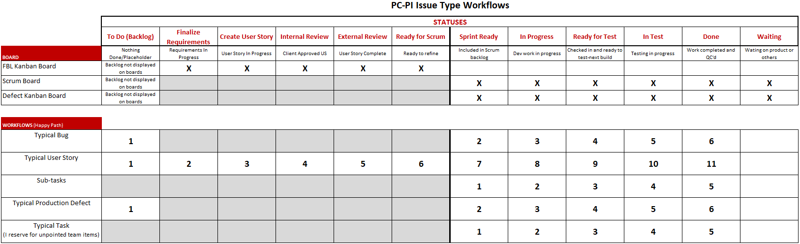

Search
To locate answers to your questions, you may want to locate keywords on this help page.
You can do this with your browser's built in functionality. Simply follow these steps.
On a PC, most browsers work as follows:
- Hold the Control key (CTRL) and click F.
- Enter the word you want to seach for in the search field, then use the chevrons to move through all the places your word was located on the page.
On a Mac, most browsers work as follows:
- Hold the Command key and click F.
- Enter the word you want to seach for, then use the chevrons to move through all the places your word was located on the page.
FAQs
Click on a question to reveal the answer. Click again to close it.
How does custom feature work progress?

Do all issue types progress through the workflow the same way?
NO. See below for the happy path of each issue type from creation to completion.

What is the significance of the various issue types?
Each issue type has a purpose. While there are always exceptions, the following is a good guideline.
- Story - The basic issue type for dev/scrum team work requests.
- Bug - Issue reported with software in the dev cycle within project. Work not yet in production.
- Defect - Issue reported in production environment.
- Subtask - Generally reserved for the scrum team, used to break down specific work required to complete the parent issue.
- Task - Issue type typically reserved for "to do" items within the teams. Work that may or may not even be included in a sprint, not always estimated, etc. Provides a flexible issue type for a variety of tasks needed outside typical sprint cadence or reporting.
How can I get work executed by the scrum team?
All work coming into the scrum team requires a user story. The basic flow is:
- Create user story and progress it through statuses to obtain any input and/or approvals.
- Once you believe the issue is "ready" for the team to execute, mark it READY FOR SCRUM.
- The team will review and refine the user story from there. This includes asking questions to remove any ambiguities. Once that is complete, the issue will be marked SPRINT READY and it is then available for inclusion during sprint planning at the discretion of the product owner, scrum master and team.
- Show up for sprint planning to lobby for your work to be selected and/or contact the product owner in advance to ensure they are aware of the need or priority of your user story.
Creating and refining user stories is an iterative process, so remember you should expect to revisit and refine as you go, so don't be too critical of yourself too early. If you need assistace, seek an active scrum master.
How do I write an effective user story?
- Make the summary as descriptive and concise as possible.
- In the description, use plain english as much as possible to outline the user story. Assume the dev who will execute the work is brand new. Keep things as simple as possible. If there is need for more details, the dev will seek it out.
- Include acceptance criteria. Simply put, this is how you are going to check the work to ensure it is done, done properly and working as expected. Again, try to use plain English as much as possible. If and as needed, include brief notes for developers with details you think add value.
Search online for examples. There are many out there and even Jira hosts some great examples.
I cannot move an issue to SPRINT READY. Why not?
Only scrum masters and project leads do this. It is by design and is a workflow control or gatekeeper. Ask for help from a scrum master. You can advance it to READY FOR SCRUM which will also let the team know it is ready for acceptance and refinement.
Did items MLNA-XXXX make it in the next release?
If there is a fixversion indicated, it was built into a testable software build. You can check that release by clicking OR go to the releases page and view details and/or click to view the contents of the planned release.
What should I put in FixVersion for an issue?
Nothing. The dev team will indicate which fixVersion an item is included in when the work is done and a fix is expected in a particular build. You can always look at the RELEASES section in Jira to track items included in various planned releases.
Is it too late to get my item in the current sprint?
In a word, "Yes." Current sprint implies the sprint already in progress. If you need something done, check with the product owner or scrum master to see what might be possible to "trade" for this work, or determine what capacity might exist now or in the near future to accommodate the request.